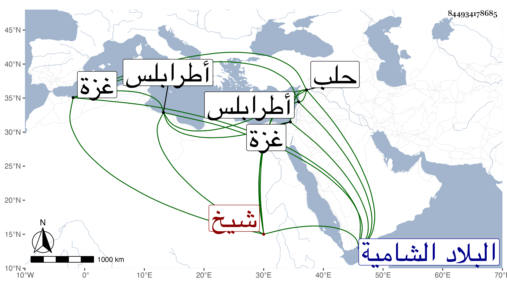

0902Sakhawi.DawLamic.ITO20230111-ara1.EIS1600.844934178685
Biography ID: 844934178685
1107
شاذ بك الصارمي إبراهيم بن المؤيد شيخ . صار بعد موت سيده من مماليك والده المؤيد ثم أخرج إلى البلاد الشامية وتأمر هناك وتنقل بالبذل حتى صار حاجب الحجاب بطرابلس ثم أتابك حلب ثم نائب غزة ، ولم يلبث أن مات في ربيع الأول سنة سبع وستين ، وقد قارب الستين .
